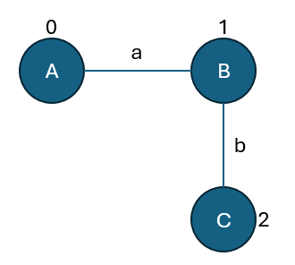

Frequent Subgraph Mining#
#
1. Problem Definition#
What is a subgraph?
Definition of frequent subgraph
Support measure:
support = number of graphs (or times) subgraph appears
2. Settings for Mining#
Single large graph vs. graph database (multiple small graphs)
Labeled vs. unlabeled graphs
3. The gSpan Algorithm#
Depth-first search (DFS) code tree
Lexicographical ordering of subgraphs
Pattern growth strategy
Avoiding isomorphism via canonical form
4. Challenges#
Graph isomorphism (NP-complete)
Search space explosion
Efficient pruning strategies
Scalability on large real-world data
5. Applications#
Bioinformatics (e.g., chemical compound discovery)
Malware detection
Social network analysis
1. Problem Definition: Frequent Subgraph Mining#
🔹 What is a Subgraph?#
Let \( G = (V, E)\) be a graph with vertex set \( V \) and edge set \( E \).
A subgraph \( G' = (V', E') \) is a graph such that:
\( V' \subseteq V \)
\( E' \subseteq E \cap (V' \times V') \)
Subgraphs can be categorized as:
Induced subgraphs: formed by selecting a subset of vertices and including all edges among them that exist in the original graph.
Partial subgraphs: formed by subsets of vertices and only a subset of the corresponding edges.
🔹 Frequent Subgraph#
Given:
A dataset \( \mathcal{D} = \{G_1, G_2, \ldots, G_n\} \) of graphs (transactional setting), or
A single large graph (single-graph setting)
A minimum support threshold \( \sigma \)
A subgraph \( S \) is frequent if:
That is, the occurrence frequency of subgraph \( S \) satisfies the required support threshold.
🔹 Support Measure#
🧩 Transactional Setting (Graph Database)#
In this setting, the dataset contains multiple independent graphs:
Each graph represents a separate entity (e.g., a molecule, a social network, or a protein structure).
The support of a subgraph \( S \) is defined as:
That is, the number of graphs in which subgraph \( S \) appears (as an isomorphic subgraph).
🌐 Single-Graph Setting#
In this setting, we have one large graph (such as a web graph, a social network, or a transportation network).
The support of a subgraph \( S \) is the number of distinct embeddings of \( S \) within the large graph \( G \):
Note: Subgraph isomorphism is an NP-complete problem. Counting all embeddings is computationally expensive.
🔹 Comparison Between Settings#
Feature |
Transactional Setting |
Single-Graph Setting |
|---|---|---|
Data Type |
Multiple independent graphs |
One large graph |
Goal |
Find subgraphs frequent across different graphs |
Find subgraphs frequent within one large graph |
Example |
Set of molecular graphs, multiple social networks |
A single large social network or web graph |
Support Measure |
Count of graphs containing the subgraph |
Count of distinct embeddings of the subgraph |
🔹 Example#
Suppose we have the following graphs:
\( G_1 = \{ A \rightarrow B, B \rightarrow C \} \)
\( G_2 = \{ A \rightarrow B, A \rightarrow C \} \)
\( G_3 = \{ A \rightarrow B, B \rightarrow C, C \rightarrow A \} \)
Let subgraph \( S = \{ A \rightarrow B \} \).
Then:
If \( \sigma = 2 \), then \( S \) is frequent.
🔹 Notes#
The goal of frequent subgraph mining is to discover all subgraphs that appear frequently in the dataset or large graph.
Isomorphism checking is central but computationally heavy.
The search space of all possible subgraphs grows exponentially with the number of nodes and edges.
🔹 Application Areas#
Bioinformatics: discovering protein interaction motifs
Cheminformatics: identifying frequent molecular fragments
Social Network Analysis: detecting recurrent social structures
Cybersecurity: mining frequent attack or communication paths
✅ 2. Settings for Frequent Subgraph Mining (FSM)#
Frequent Subgraph Mining (FSM) can be performed under different settings, determined by:
The structure of input data (single large graph vs. multiple graphs)
The presence of labels on nodes and edges.
🔹 A. Graph Data Settings#
1. Graph Database Setting (Transactional Setting)#
Input: A collection of graphs
$\( \mathcal{D} = \{G_1, G_2, \dots, G_n\} \)$Goal: Discover subgraphs that appear in multiple graphs of the database.
Support Definition: $\( \text{support}(g) = |\{ G_i \in \mathcal{D} \mid g \subseteq G_i \}| \)$
A subgraph \( g \) is frequent if \( \text{support}(g) \geq \sigma\),
where \( \sigma\) is the minimum support threshold.
2. Single Large Graph Setting#
Input: A single, large graph \( G = (V, E)\).
Goal: Identify subgraphs that appear frequently within the same graph.
Support Definition: $\( \text{support}(g) = |\{ \text{distinct embeddings of } g \text{ in } G \}| \)$
Each embedding corresponds to a distinct subgraph isomorphism of \( g\) in \( G\).
Note: Subgraph isomorphism is NP-complete, and counting all embeddings can be computationally expensive.
🔹 B. Label Information Settings#
1. Labeled Graphs#
Vertex-labeled: Each node \( v \in V \) has a label \( l(v) \in \Sigma_V \).
Edge-labeled: Each edge \( e \in E \) has a label \( l(e) \in \Sigma_E \).
Two graphs \( g_1 \) and \( g_2 \) are isomorphic only if labels match on corresponding nodes and edges:
and $\( l(u) = l(f(u)), \quad l(v) = l(f(v)), \quad l(u,v) = l(f(u),f(v)) \)$

2. Unlabeled Graphs#
No labels on vertices or edges.
Isomorphism checking depends only on topology, not semantics.
This simplifies computation but may reduce the interpretability of discovered patterns.
🔹 Summary Table#
Setting Type |
Description |
Support Definition |
|---|---|---|
Graph Database |
Multiple small graphs |
Number of graphs containing the subgraph |
Single Large Graph |
One large graph |
Number of distinct embeddings in the graph |
Labeled Graph |
Labels on nodes/edges |
Isomorphism considers matching labels |
Unlabeled Graph |
No labels |
Isomorphism purely structural |
🔹 Practical Notes#
FSM algorithms are designed for specific settings:
Graph Database:
gSpan,FFSM,MoFaSingle Large Graph:
GRAMI,VF2-FSM
The choice of setting affects:
How support is computed
How isomorphism is checked
The computational complexity of mining
✅ 3. The gSpan Algorithm#
main paper: https://sites.cs.ucsb.edu/~xyan/papers/gSpan-short.pdf
Frequent Subgraph Mining is computationally intensive due to subgraph isomorphism checks. The gSpan algorithm (Graph-based Substructure Pattern Mining) addresses this by:
Avoiding explicit isomorphism testing.
Using a DFS code tree to represent subgraphs canonically.
Applying lexicographical order to ensure each subgraph is visited once.
Growing patterns efficiently via pattern-growth.
🔷 3.1 DFS Code Tree#
gSpan encodes each subgraph using a Depth-First Search (DFS) code, a tuple-based linear representation of the subgraph.
Each edge in the DFS code is represented as a 5-tuple: $\((i, j, l(i), l(i, j), l(j))\)$
Where:
\( i, j \): Vertex IDs (DFS order).
\( l(i) \): Label of vertex \( i \)
\( l(j) \): Label of vertex \( j \)
\( l(i, j) \): Label of edge between \( i \) and \( j \)
For example, for a graph with nodes A-B-C and labels:

(0:A) –a–> (1:B) –b–> (2:C)
The DFS code is:
(0, 1, A, a, B), (1, 2, B, b, C)
🔷 3.2 Lexicographical Order & Canonical Form#
For example, in our graph we have alternative DFS codes (depending on starting vertex):
(0, 1, B, b, C), (0, 2, B, a, A)
(0, 1, C, b, B), (1, 2, B, a, A)
So, the same graph can produce multiple DFS codes depending on the traversal order.
To avoid duplicate subgraphs, gSpan defines a lexicographic ordering over all DFS codes. Among all possible DFS codes of a graph, the minimum one is the canonical code.
A subgraph is only extended if it matches its canonical DFS code, eliminating redundant isomorphic substructures.
Definition (Canonical Form):
A canonical form of a subgraph is a unique DFS code that is lexicographically smallest among all possible DFS codes of that subgraph. It guarantees that each subgraph is visited exactly once during mining.
For our example, comparing all DFS codes lexicographically:
(0, 1, A, a, B), (1, 2, B, b, C)
(0, 1, B, b, C), (0, 2, B, a, A)
(0, 1, C, b, B), (1, 2, B, a, A)
The canonical DFS code is:
(0, 1, A, a, B), (1, 2, B, b, C)
🔷 3.3 Pattern Growth Strategy#
The gSpan algorithm grows patterns by appending edges to the current DFS code:
Forward extension: Add a new vertex and edge.
Backward extension: Close a cycle by connecting to a previously visited vertex.
This is done recursively, pruning search paths when the support of the pattern drops below the threshold.
🔷 3.4 gSpan Pseudocode#
def gSpan(current_dfs_code, database, min_support):
if not is_canonical(current_dfs_code):
return
support = compute_support(current_dfs_code, database)
if support < min_support:
return
report(current_dfs_code)
extensions = generate_frequent_extensions(current_dfs_code, database, min_support)
for ext in extensions:
gSpan(current_dfs_code + ext, database, min_support)
pip install gspan_mining
Requirement already satisfied: gspan_mining in c:\users\sashk\anaconda3\envs\mlgbook\lib\site-packages (0.2.3)
Note: you may need to restart the kernel to use updated packages.
from gspan_mining.gspan import gSpan
# Run gSpan on file
gspan_obj = gSpan("graph.data",
min_support=1,
min_num_vertices=2,
max_num_vertices=3,
verbose=True)
gspan_obj.run()
# Access discovered patterns via the _report_df attribute
# _report_df.columns might be: ['graph_id', 'pattern', 'support', ...]
print(gspan_obj._report_df)
is_min: checking [(frm=0, to=1, vevlb=('A', 'a', 'B'))]
t # 0
v 0 A
v 1 B
e 0 1 a
Support: 2
-----------------
is_min: checking [(frm=0, to=1, vevlb=('A', 'a', 'B')),(frm=1, to=2, vevlb=(-1, 'b', 'C'))]
t # 1
v 0 A
v 1 B
v 2 C
e 0 1 a
e 1 2 b
Support: 1
-----------------
is_min: checking [(frm=0, to=1, vevlb=('B', 'b', 'C'))]
t # 2
v 0 B
v 1 C
e 0 1 b
Support: 1
-----------------
support description num_vert
1 2 v 0 A v 1 B e 0 1 a 2
2 1 v 0 A v 1 B v 2 C e 0 1 a e 1 2 b 3
3 1 v 0 B v 1 C e 0 1 b 2
Here is an implementation of gspan:
from itertools import combinations
class CanonicalGSpan:
def __init__(self, graphs, min_support=1):
"""
graphs: list of graphs
Each graph is a list of edges: (i, j, label_i, label_edge, label_j)
min_support: minimum number of graphs a subgraph must appear in
"""
self.graphs = graphs
self.min_support = min_support
self.frequent_subgraphs = set() # Use set to avoid duplicates
def _dfs_code(self, subgraph):
"""
Return a canonical representation of the subgraph.
For simplicity, sort edges lexicographically by (i,j,label_i,label_edge,label_j)
"""
return tuple(sorted(subgraph))
def _count_support(self, subgraph):
"""Count in how many graphs this subgraph appears (naive matching)"""
count = 0
sub_edges = set([(e[0], e[1], e[3]) for e in subgraph])
for g in self.graphs:
g_edges = set([(e[0], e[1], e[3]) for e in g])
if sub_edges.issubset(g_edges):
count += 1
return count
def _dfs_extend(self, subgraph, max_len):
"""Recursively extend subgraph"""
if len(subgraph) > max_len:
return
canonical = self._dfs_code(subgraph)
support = self._count_support(subgraph)
if support >= self.min_support and canonical not in self.frequent_subgraphs:
self.frequent_subgraphs.add(canonical)
# Try all possible single-edge extensions
nodes = set([v for e in subgraph for v in [e[0], e[1]]])
for g in self.graphs:
for e in g:
if (e[0] in nodes or e[1] in nodes) and e not in subgraph:
new_subgraph = list(subgraph) + [e]
new_canonical = self._dfs_code(new_subgraph)
if new_canonical not in self.frequent_subgraphs:
self._dfs_extend(new_subgraph, max_len)
def run(self, max_len=3):
# Start with each edge as a candidate
edges_seen = set()
for g in self.graphs:
for e in g:
edge_id = (e[0], e[1], e[3])
if edge_id not in edges_seen:
edges_seen.add(edge_id)
self._dfs_extend([e], max_len)
# -------------------------------
# Example usage
graphs = [
[(0, 1, 'A', 'a', 'B'), (1, 2, 'B', 'b', 'C')],
[(0, 1, 'A', 'a', 'B')]
]
min_support = 1
max_len = 3
sg = CanonicalGSpan(graphs, min_support=min_support)
sg.run(max_len=max_len)
# Display frequent subgraphs in canonical form
for idx, pattern in enumerate(sg.frequent_subgraphs, 1):
print(f"Pattern {idx}:")
for edge in pattern:
print(" ", edge)
Pattern 1:
(0, 1, 'A', 'a', 'B')
(1, 2, 'B', 'b', 'C')
Pattern 2:
(1, 2, 'B', 'b', 'C')
Pattern 3:
(0, 1, 'A', 'a', 'B')
🔷 3.5 Summary#
gSpan avoids subgraph isomorphism by working in the DFS code space.
Canonical DFS code ensures each pattern is processed only once.
Pattern-growth strategy supports efficient traversal of the subgraph search space.
4. Challenges in Frequent Subgraph Mining#
Frequent subgraph mining (FSM) is a powerful yet computationally intensive task. Despite its wide applicability in areas like chemoinformatics, social network analysis, and bioinformatics, FSM faces several fundamental challenges:
🧩 1. Graph Isomorphism (NP-Complete)#
A key step in FSM is checking whether a candidate subgraph appears in a graph from the dataset — this is known as the subgraph isomorphism problem.
Given two graphs \( g \) and \( G_i \), we want to check: $\( g \subseteq G_i \)\( where \) \subseteq $ denotes subgraph isomorphism, not just a subset of edges or vertices.
Formally, a graph \( g = (V_g, E_g) \) is subgraph-isomorphic to \( G = (V, E) \) if there exists an injective mapping: $\( f: V_g \rightarrow V \)$ such that:
\(\forall (u,v) \in E_g\), \( (f(u), f(v)) \in E \)
node and edge labels are preserved (if labeled)
🧠 The subgraph isomorphism problem is NP-complete, meaning it is computationally expensive and no known polynomial-time algorithm exists for all general cases.
🚀 2. Search Space Explosion#
The number of possible subgraphs in a graph grows exponentially with the number of vertices and edges.
Let:
\( n \): number of vertices
\( m \): number of edges
The number of possible subgraphs is: $\( \sum_{k=1}^{n} \binom{n}{k} + \sum_{l=1}^{m} \binom{m}{l}≈(2^n - 1) + (2^m - 1) \)$
This exponential growth leads to combinatorial explosion, making exhaustive enumeration infeasible.
✂️ 3. Efficient Pruning Strategies#
To manage the large search space, pruning strategies are necessary. FSM algorithms (like gSpan) use constraints such as:
Minimum support threshold: $\( \text{support}(g) = \left| \{ G_i \in D \mid g \subseteq G_i \} \right| \geq \sigma \)\( where \) \sigma $ is the user-defined support threshold.
Canonical form and lexicographic order: Prevents exploring isomorphic duplicates by defining a unique DFS code for each subgraph.
Right-most path extension: Reduces the branching factor by only extending subgraphs in a consistent way.
These strategies help prune unpromising candidates early, improving scalability.
🌐 4. Scalability on Large Real-World Data#
In real-world applications, graph datasets can be:
Huge (e.g., molecular databases, social networks)
Highly connected
Labeled with rich semantics
Challenges in such settings:
High memory usage
Disk I/O bottlenecks
Long execution time
Solutions include:
Parallel or distributed FSM (e.g., MapReduce-based approaches)
Approximate mining: sacrifice completeness for speed
Compression techniques to reduce graph size
✅ Summary#
Challenge |
Impact |
Typical Solution |
|---|---|---|
Graph isomorphism |
High computational cost |
Canonical DFS code |
Search space explosion |
Exponential time |
Pruning strategies |
Duplicate subgraphs |
Redundancy |
Lexicographical ordering |
Large graphs |
Scalability issue |
Distributed or approximate methods |